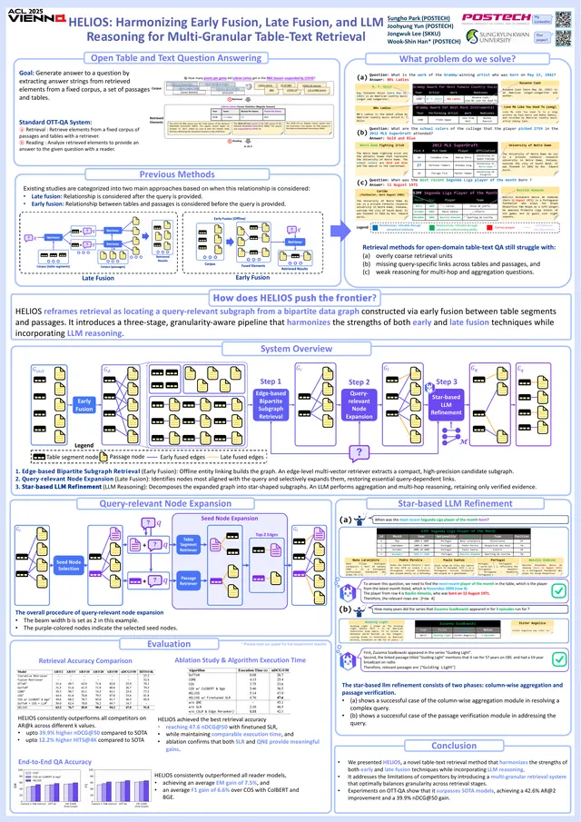
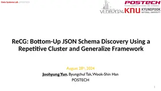

5 decks
Talks & posters
Slides and posters from my conference presentations and seminar talks on my papers. Decks open in the browser; PDFs are attached.



HELIOS: Harmonizing Early Fusion, Late Fusion, and LLM Reasoning for Multi-Granular Table-Text Retrieval
Park, S., Yun, J., Lee, J., Han, W.
